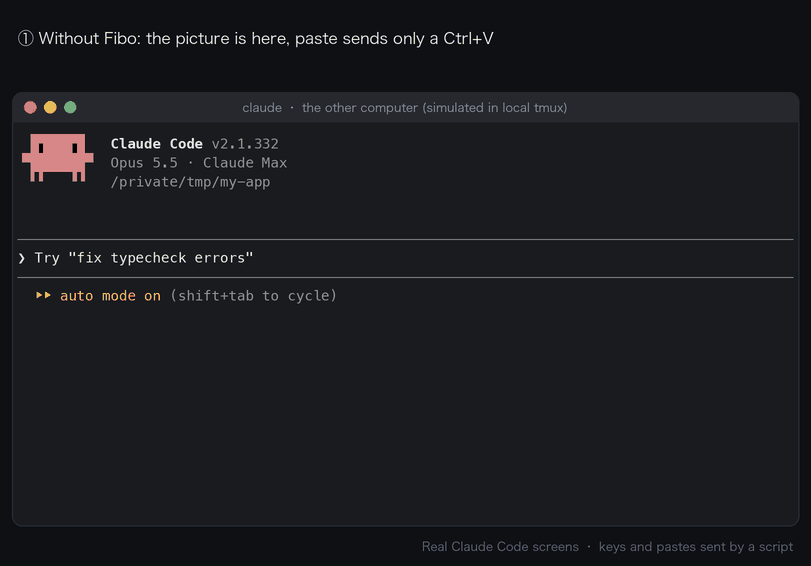

What Fibo is: a native Mac workbench for coding agents such as Claude Code and Codex, open source under MIT. It can reach another computer running Fibo over SSH and open that computer's terminals in the same window; the previous post, One Window for Terminals on Every Machine, explains how. Install: download the DMG or brew install --cask majiayu000/tap/fibo. Both computers need it.
01 The problem: ⌘V sends only a Ctrl+V
A local Claude Code gets your screenshot by reading the clipboard itself. When you press ⌘V in a terminal and the clipboard holds only a picture, the terminal writes one byte, 0x16, which is Ctrl+V. Claude Code reads that byte and asks its own operating system for the clipboard image. Between a terminal and a program there is only a byte stream, and no common way to say “a PNG follows”.
When the terminal runs on another computer, that path breaks. The picture is on the clipboard of computer A in front of you, but 0x16 goes to computer B, and Claude Code on B reads B's clipboard, which doesn't have it. Dragging a file in fails the same way: the terminal pastes the file's path on A as text, and B has no such file.
Fibo's window reaches another computer through ssh -L, which forwards the Unix socket of that computer's fibo serve host to this one, and then speaks the same protocol as it does locally (the previous post covers this). So Fibo had the same problem. Before PR #625, pasting a picture or dropping a file on another computer's terminal was refused with a note that files and pictures couldn't be sent to another computer yet.
Why OSC 52 doesn't help
People often suggest OSC 52, which lets a remote program read and write your local clipboard. According to kitty's documentation, OSC 52 carries plain text only; pictures need kitty's OSC 5522 extension, which few terminals support. Someone asked Claude Code for image paste over ssh via OSC 52/5522 in issue #42712, which is closed; the v2.1.332 we tested still reads its own computer's clipboard on Ctrl+V. Terminal image protocols (kitty's, iTerm2's) go the other way: they let a program draw a picture in the terminal.
02 The observation: a lone image path is an attachment
Locally, dragging a screenshot file into Claude Code also produces [Image #1]. Nothing private is involved: the terminal just pastes the file's path (Fibo wraps it in a bracketed paste, \x1b[200~…\x1b[201~). When one paste is nothing but the path of an image file, Claude Code reads that file from disk and attaches it.
Fibo's phone app already relied on this to send pictures to agents on a computer: the phone uploads the picture to fibo serve on that computer, the host saves it as a file, and the path is pasted into the terminal on its own. Before writing code, we mapped the edges: in Claude Code v2.1.332, we did one bracketed paste per case, 20 in all. Where text was involved we used 看看这个 (“look at this”).
| Already in the prompt | What this one paste contained | Result |
|---|---|---|
| empty | absolute path /tmp/fibo-edge/shot.png | [Image #1] |
| empty | absolute path plus a trailing space | [Image #1] |
| empty | path then text /tmp/…/shot.png 看看这个 | kept as text |
| empty | text then path 看看这个 /tmp/…/shot.png | kept as text |
| empty | space in the file name, escaped my\ shot.png | [Image #1] |
| empty | space in the file name, not escaped my shot.png | [Image #1] |
| empty | path in single or double quotes (2 pastes) | [Image #1] |
| empty | starting with ~: ~/fibo-edge-shot.png | kept as text |
| empty | relative path shot.png (file in the current folder) | kept as text |
| empty | absolute path to a JPEG, GIF or WebP (3 pastes) | [Image #1] |
| empty | absolute path to a TIFF or BMP (2 pastes) | kept as text |
| empty | right format, but no such file | kept as text |
| empty | two absolute paths, one space between | [Image #1] [Image #2] |
typed 看看这个 | absolute path plus a space | 看看这个 [Image #1] |
typed 看看 | two absolute paths, space between | 看看[Image #1] [Image #2] |
| empty, typing after | absolute path plus a space, then typed 图里是什么 (“what's in it”) | [Image #1] 图里是什么 |
What counts is the single paste, not what the prompt already holds: a path and text in the same paste stay text, while a path pasted on its own works with text typed before or after it. The table gave Fibo four rules:
- Save the file first, then answer with an absolute path:
~and relative paths don't count, and neither does a missing file. - Paste the path on its own: never in the same paste as other text.
- Turn TIFF and BMP into PNG: of the six formats tested, only PNG, JPEG, GIF and WebP were accepted, and some apps copy pictures as TIFF only.
- Join several pictures with spaces in one paste: paths are escaped by shell rules, so names with spaces still work.
Without Fibo, you can do it by hand: save the screenshot as a file (⌘⇧4 saves to the Desktop by default), copy it over, then paste its absolute path on its own in Claude Code over there.
# on the computer in front of you
scp ~/Desktop/screenshot.png other-computer:/tmp/shot.png
# a TIFF first: sips -s format png shot.tiff --out shot.png
# then, in Claude Code on the other computer, paste just this line
/tmp/shot.pngYou can type before or after it, as long as the path and your text aren't in the same paste.
03 The design: the picture goes around the terminal, only the path goes in
Fibo's job is to hide those manual steps behind one ⌘V: the window hands the picture to the other computer's host, which saves it as a file and answers with its absolute path, and the window pastes that path into the terminal.
ssh -L forward the window already has.The window already talks to that host over a protocol, and we added one request, SaveImage { data }, where data is the picture in base64. On ⌘V, the window checks which computer the terminal is on: if it's this one, it sends 0x16 as before and Claude Code reads the clipboard itself; if it's another, the picture is uploaded. Dropping a picture file on the terminal goes through the same upload function.
On the other computer, the host decodes, saves and answers with the path (simplified code):
Request::SaveImage { data } => {
let bytes = base64::engine::general_purpose::STANDARD
.decode(data)
.map_err(io::Error::other)?;
let path = crate::pictures::save(&supervisor(shared)?.socket(), &bytes)?;
Ok(Reply::Text(path.to_string_lossy().into_owned()))
}pictures::save is shared with the phone's pictures, which go to phone-images/ beside the host's socket. The window escapes the returned path the same way as a dropped file and pastes it; when the terminal has bracketed paste mode on, it is wrapped in \x1b[200~…\x1b[201~, and a space follows the path.
The upload runs on a background thread, over a new connection to the forwarded socket each time. ssh -L gives every connection its own channel, so an upload doesn't sit on the connection your typing goes through. The whole change is 12 files, 278 lines added and 92 removed.
04 Details and trade-offs
Why not the phone's upload protocol
The phone reaches a computer through a different protocol (ssh host fibo remote --stdio) that can already send pictures. But the window already has an ssh -L forward to that computer; opening the phone protocol as well would mean two SSH links to one computer, each with its own disconnects and errors. One more request was simpler.
base64 and the 11 MB limit
The protocol is JSON. A plain Vec<u8> would be written as an array of numbers, 3 to 4 characters per byte; base64 adds only a third. A frame holds at most 16 MB, so one picture may be at most 11 MB (about 14.7 MB encoded). A bigger one is stopped on this computer with a note and never sent.
Formats: by header, not by extension
The window looks at the bytes' header. PNG, JPEG, GIF and WebP go as they are; another format that decodes as a picture (TIFF, BMP) goes as PNG, whether it came from the clipboard or a dropped file; anything that doesn't decode (a PDF, source code) is refused, with a note to copy the file over first. The host on the other side also keeps only those four headers and writes nothing else to disk.
Several pictures: one fails, none is pasted
When several pictures are dropped at once, the window uploads them one by one, and if one fails, no path is pasted, so the prompt never gets half of them. The ones already uploaded stay on the other computer and are cleared after 7 days, as below.
Storage: yours only, kept 7 days
Only you can enter phone-images/; files are mode 600 with random UUID names. Each new save deletes pictures older than 7 days. Seven days because resuming a session from a few days ago may have the agent read a picture from its history again.
Older hosts: no major protocol bump
A common case: your Fibo is updated, the other computer's isn't. Had we bumped the protocol's major version for SaveImage, the new window's handshake with the old host would fail and none of that computer's terminals would open. So the version stays: a host from v0.1.4 on answers an unknown request with a line starting unsupported or invalid request: …, and the window shows “Fibo on that computer is too old to receive images. Update it, then try again.” instead. A host from v0.1.3 or earlier closes the connection on an unknown request, and the window shows the raw error.
05 How we checked it
- Unit tests: PNG goes unchanged; TIFF comes out as valid PNG; PDF and source code bytes are refused; an old host's answer is replaced rather than shown as is.
- Host end to end: the test starts a real
fibo serve, sendsSaveImage, and checks the answer is an absolute path underphone-images/whose bytes match what was sent; a shell script sent as a picture is refused. - Two real Macs, both directions: A sent a 487 KB PNG to B through the window's forward; the file on B had the same sha256 as the original and mode
600, pasting it in Claude Code on B gave[Image #1], and it described the picture. The other way, sitting at B, we took a screenshot, switched to A's terminal in B's Fibo and pressed⌘V; Claude Code on A got[Image #1]too.
Limits: what we haven't tested
- Dropping files: same upload function as
⌘V, but not yet tried between two real machines. - “Fibo on that computer is too old”: seen only in unit tests; both real machines run the new version.
- Big pictures on slow links: each upload's connection has a 10-second read and write timeout, and the window shows no progress while uploading. Whether a few MB time out on a very slow link is untested.
- Other agents: the table covers Claude Code only. Codex opened with a hook review screen and we didn't get to test it; OpenCode isn't installed on either machine. From the phone's pictures we expect them to take a lone image path too, but we didn't check this time.
- Windows on the other end: paths are escaped by Unix shell rules; not tried.
Summary: three things we did
- Measure first, then design: 20 pastes set four rules (absolute path, its own paste, convert to PNG, spaces between several), and the design follows the table instead of guesses.
- Reuse the connection and storage we had: one new request in the protocol, one save function shared with the phone; the change is 12 files, +278/−92.
- Don't bump the major protocol version for a feature: a new window still opens an old host's terminals, and only picture paste errors (hosts from v0.1.4 say to update first).